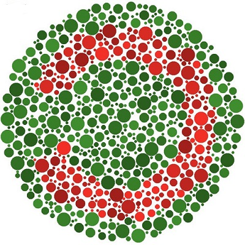

Den vanligaste formen av färgblindhet innebär att du har svårt att skilja på rött och grönt. Då har du svårt att se skillnaden mellan färger som har delar av rött och grönt i sig. Du kan till exempel ha svårt att se skillnaden mellan blått och lila. Det beror på att lila är en blandning av blått och rött. Du kan också ha svårt att se skillnad mellan grönt och brunt eftersom brunt är en blandning av grönt och rött. Röd-grön färgblindhet innebär alltså inte att du ser gräsmattan som röd eller stoppsignalen som grön. Utan det innebär att du har svårt att se skillnaden mellan rött och grönt.


